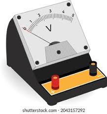
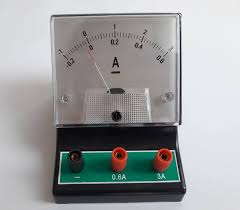
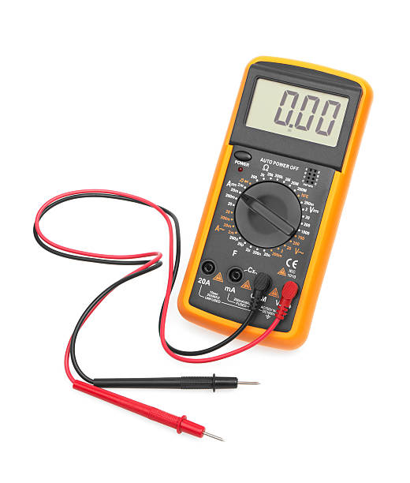
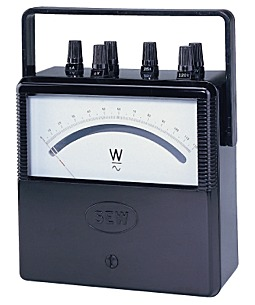
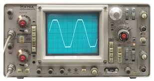
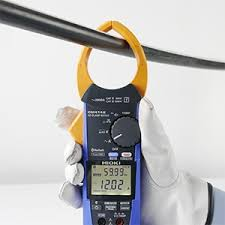
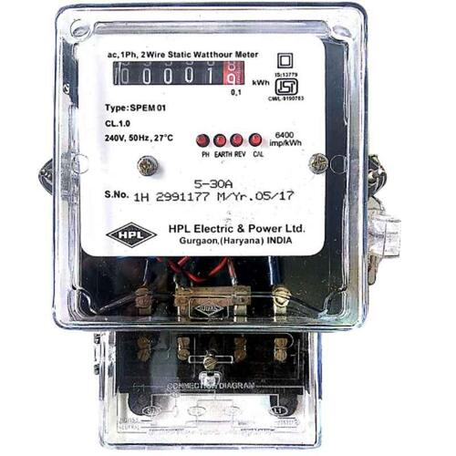
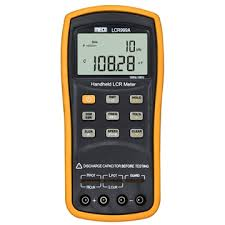

Voltmeter
Definition
Instrument used to measure electrical voltage.
Functions
- Measure AC Voltage
- Measure DC Voltage
- Circuit Testing
Applications
- Laboratories
- Electrical Maintenance
- Power Systems

Ammeter
Definition
Instrument used to measure electric current.
Functions
- Current Measurement
- Load Analysis
- Circuit Monitoring
Applications
- Motor Testing
- Industrial Systems
- Electrical Labs

Multimeter
Definition
Multipurpose instrument used to measure voltage, current and resistance.
Functions
- Voltage Measurement
- Current Measurement
- Resistance Measurement
- Continuity Testing
Applications
- Electronics Repair
- Troubleshooting
- Educational Labs

Wattmeter
Definition
Instrument used to measure electrical power.
Functions
- Power Measurement
- Load Analysis
- Efficiency Testing
Applications
- Power Plants
- Industries
- Laboratories

Oscilloscope (CRO)
Definition
Instrument used to display electrical waveforms.
Functions
- Waveform Analysis
- Frequency Measurement
- Signal Monitoring
Applications
- Communication Systems
- Electronics Testing
- Research Labs

Clamp Meter
Definition
Measures current without disconnecting the circuit.
Functions
- Current Measurement
- Fault Detection
- Load Monitoring
Applications
- Electrical Maintenance
- Industrial Systems
- Power Distribution

Energy Meter
Definition
Measures electrical energy consumption.
Functions
- Energy Measurement
- Billing Calculation
- Consumption Monitoring
Applications
- Homes
- Industries
- Commercial Buildings
Megger
Definition
Instrument used to measure insulation resistance.
Functions
- Insulation Testing
- Cable Testing
- Safety Inspection
Applications
- Power Cables
- Transformers
- Electrical Installations

LCR Meter
Definition
LCR Meter measures Inductance (L), Capacitance (C), and Resistance (R) of electronic components.
Functions
- Measure Resistance
- Measure Capacitance
- Measure Inductance
- Component Testing
Applications
- Electronics Laboratories
- Circuit Design
- Component Testing
- Research Projects